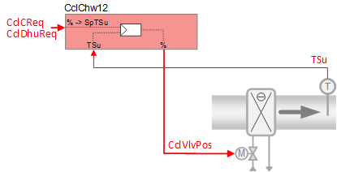
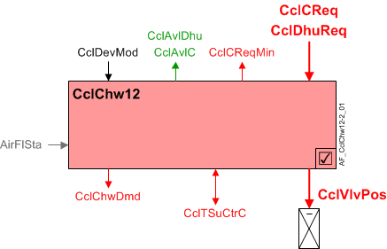

带送风温度控制的冷冻水冷却盘管 (CclChw12)
 | 该应用程序功能操作control valve 用于冷却盘管。 冷却请求信号（来自房间控制器）是transformed进入送风温度setpointand is provided to the ownPID controller用于级联supply air temperature control。阀门位置由 PID 控制器的输出得出。 如果使用除湿，则冷却盘管除湿请求信号不经过级联送风温度PID而转换成阀位（这意味着除湿是非级联控制）。 如果同时接收到冷却请求和除湿请求，则将使用两个计算出的阀位置中较大的一个。 |
Required elements and how to configure them:
元素 | I/O | 信号类型 |
|---|---|---|
CclVlvPos "Cooling coil valve position" | On-board output, Cooling coil valve position | Water any signal type |
TSu "Supply air temperature" | On-board input, Supply air temperature | Any signal type |
Function
下图显示了与此应用程序函数关联的 BACnet 对象。主要信号流程总结如下：
冷却盘管冷却或除湿请求（CclCReq / CclDhuReq）被接收并处理成冷却盘管阀门位置的输出信号（CclVlvPos).
基本功能：接受来自相关房间控制器的请求信号并将其映射到适当的控制设定点；将设定值与送风温度传感器的当前值进行比较；在将结果作为命令输出到控制设备的对象之前，将结果传递给设备模式逻辑开关。

| 命令或请求（或相关） |
| 条件或状态或可用性的通知 |
| 设备模式 |
| 互锁（内部信号，不是 BACnet 对象；有关其他信息，请参阅互锁部分） |


Interlocks
房间自动化联锁是协调 HVAC 设备之间交互的内部信号。它们在 ABT 站点或 Web 界面中不可见，但与它们关联的参数可见。有关影响联锁功能的参数的提示，请参阅注释列。
信号 | 类型 | 方向 | 描述 | 评论 |
|---|---|---|---|---|
AirFlCReq | 布尔值 | 出去 | 气流冷却要求 | 有关名为“...AirFlCReq”的参数，请参阅配置部分。 |
AirFlDhuReq | 布尔值 | 出去 | 风量除湿要求 | 有关名为“...AirFlDhuReq”的参数，请参阅配置部分。 |
AirFlSta | 布尔值 | In | 气流状态 | 范围EnMonAirFlSta必须=是。有关其他信息，请参阅配置部分。 |
Sequence
Chilled water valve modulation:响应于冷却请求（或除湿请求，如果配置），冷却阀被调节以将室温控制在设定点或对空气进行除湿。为了响应特殊模式（例如预热、冷却或安全条件）的外部触发，冷却阀可以设置为关闭或完全打开。
从相关“房间”AF 接收来自室温PID 控制器和/or 除湿PID 控制器的请求信号。如果同时接收到冷却请求和除湿请求，则将使用两个信号中较大的一个。
Cascaded supply air temperature control:制冷需求信号（CclCReq) 从室温 PID 映射到送风温度设定点值 (CclSpTSuC)，并用作位于此 AF 中的级联送风温度 PID 的输入。送风 PID 将设定点值与送风温度传感器的当前值进行比较，任何差异都用于增加或减少到命令对象的模拟输出信号。
如果送风温度传感器无效，则通过室温PID进行温度控制。
Dehumidification control:如果使用除湿，则冷却盘管除湿请求信号（CclDhuReq）转换为模拟输出信号（CclVlvPos）而不经过该AF中的级联送风温度PID（这意味着除湿是非级联控制）。
Device mode:设备模式的输入信号是多状态值。
CclDevMod支持以下状态：
- Off
- Control mode (modulation)
- Fully open
Cooling available status:当冷却盘管可供冷却时，二进制输出信号为“Cooling coil available for cooling" (CclAvlC）将为“是”（可用）。CclAvlC系统使用它来调节冷却资源。例如，如果需要冷却，但冷却盘管不可用，因为它已经处于最大容量（因为设备模式完全打开），则CclAvlC将发出“否”信号，并且将激活温度控制序列中的下一个可用冷却资源。
要使冷却可用状态为“是”，设备模式必须等于“控制模式”（调制）。
Dehumidification available status:当冷却盘管可用于除湿时，二进制输出信号为“Cooling coil available for dehumidification" (CclAvlDhu）将为“是”（可用）。要使状态为“是”，设备模式必须等于“控制模式”（调制）。
Supply chain interface, ChwDmd:冷冻水需求的输出信号是一个多状态值。
CclChwDmd支持以下状态：
- Off (no demand signal)
- Cooling demand (demand signal is active)
- Free cooling (cooling device is in free cooling mode)
当有多余的冷却能力时，中央设备可以启动自然冷却。在某些条件下，房间可以在没有明确的制冷需求的情况下利用剩余的制冷能力；室温必须低于与当前室内气候模式（舒适、预舒适等）相关的设定点。这种类型的自然冷却不同于“节能器”自然冷却，后者使用外部空气风门。
下图说明了控制调制和相关功能。

Configuration
 Parameters
Parameters
描述 | 范围 | 默认值 |
|---|---|---|
Supply air temperature setpoints | ||
Maximum supply air temperature setpoint for cooling | SpTSuCMax | 32 [°C] |
Minimum supply air temperature setpoint for cooling | SpTSuCMin | 16 [°C] |
Interlocks | ||
Switch-on point for air volume flow cooling request | SwiOnAirFlCReq | 4 [%] |
Hysteresis for air volume flow cooling request | HysAirFlCReq | 2 [%] |
Switch-on delay for air volume flow cooling request | DlyOnAirFlCReq | 30 [s] |
Switch-on point for air volume flow dehumidification request | SwiOnAflDhuReq | 4 [%] |
Hysteresis for air volume flow dehumidification request | HysAirFlDhuReq | 2 [%] |
Switch-on delay for air volume flow dehumidification request | DlyOnAflDhuReq | 30 [s] |
Switch-off delay for air volume flow dehumidification request | DlyOfAflDhuReq | 0 [s] |
Enable monitoring for air volume flow state 0:No | EnMonAirFlSta | 1:Yes |
Chilled water demand | ||
Switch-on point for chilled water demand | SwiOnPtChwDmd | 4 [%] |
Hysteresis for chilled water demand | HysChwDmd | 2 [%] |
Internal settings – do not change | ||
Temperature unit | TUnit | [°C] |
Interface
界面 | 描述 | 类型 | 参考号 | 拥有者 |
|---|---|---|---|---|
CclVlvPos | Cooling coil valve position | AO | ◉ | Room segment / Device |
CclSpTSuC | Cooling coil supply air temperature setpoint for cooling | APrcVal | ● | - |
CclDevMod | Cooling coil device mode 1:Off | MPrcVal | ● | - |
CclTSuCtrC | Supply air temperature controller cooling for cooling coil | 控制器 | ● | - |
CclCReq | Cooling coil cooling request | ACalcVal | ● | - |
CclCReqMin | Cooling coil cooling request minimum | ACalcVal | ● | - |
CclDhuReq | Cooling coil dehumidification request | ACalcVal | ● | - |
CclAvlC | Cooling coil available for cooling 0:No | BCalcVal | ● | - |
CclAvlDhu | Cooling coil available for dehumidification 0:No | BCalcVal | ● | - |
CclChwDmd | Cooling coil chilled water demand 1:Off | MCalcVal | ● | - |
CclSplyChw | Cooling coil supply chain for chilled water | GrpMbr | ● | Room segment |
Engineering and commissioning
范围EnMonAirFlSta (Enable monitoring for air volume flow state) 必须设置为 1：是。这是默认设置CclChw12(unlikeCclChw11其中此设置是可选的）。重要的是要了解此设置对于 NOT 是可选的CclChw12.